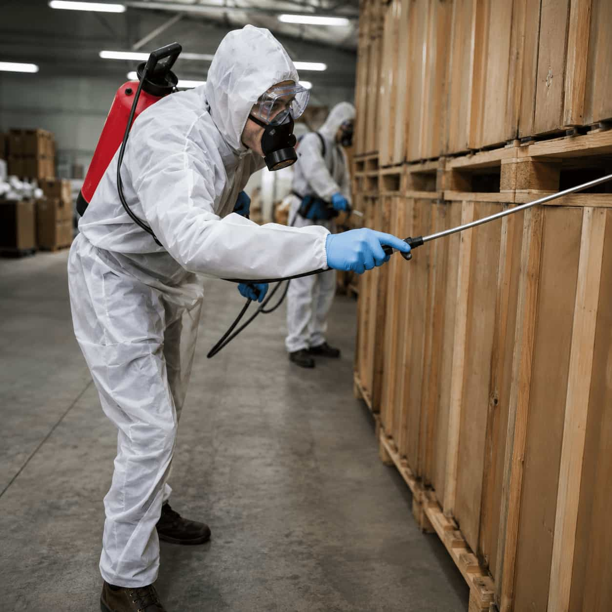

More context for more useful conversations.
Commercial requests can have different operational needs. helps you share the kind of property, concern, and timing requirements that independent providers may need to decide if they are available to respond.
Built around your property context
Property type
Retail, offices, hospitality, multi-unit, and other commercial settings.
Operating needs
Help providers understand access, hours, and important considerations.
Ongoing discussions
Explore maintenance or monitoring options if providers offer them.
Multiple locations
Use your message to share the scale and location context of a request.

Give Us A Chance To Prove It!
Share your property requirements once, then discuss fit, access, and timing with relevant independent providers.
Benefits & What we do?
Commercial requests benefit from clear property context, operating needs, and practical timing information up front.
We structure commercial property requests.
Include property type, service areas, access needs, and pest concerns so providers can evaluate the request faster.
We help clarify operating requirements.
Use the request to mention business hours, sensitive areas, tenant needs, or multi-location details.
We support ongoing service conversations.
Ask providers about monitoring, maintenance, and recurring options where they are available.
We keep pricing and terms provider-led.
does not set commercial pricing; all scope, timing, and terms are discussed directly with providers.
Commercial request questions
Can a provider support ongoing business needs?
Some independent providers may offer ongoing arrangements. Availability and the scope of service vary by provider.
Do you set commercial pricing?
No. does not set prices. Any costs are discussed directly with an independent provider.
What should I include in the request?
Include the property type, pest concern, basic location context, and any operational details that matter.